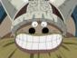
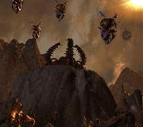
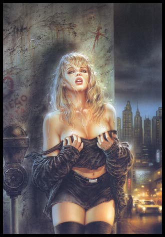

Forums galactiques > Assemblée Galactique : diplomatie officielle > Présentations
| Phidias Respect diplomatique : 6  16/05 ETU 11:06 | Score : 3 Détails Un homme d'un âge avancé, assis au fond de l'assemblée, occupé à coller des feuilles d'or sur un bloc d'ivoir prit la parole sans détourner son regard :
"cher commandants de toutes horizons, on me nomme Phidias. Athénien de naissance, fils de Charmidès, j'associe mon art au service d'un développement durable intergalactique. N'hésitez pas à me contacter quelque en soit le motif, je me ferais une joie de vous répondre." Reprenant son travail méticuleux sans hésitation, Phidias adopta un air satisfait. | ||
| Aynah Dorth Respect diplomatique : 7  16/05 ETU 11:12 | Score : 5 Détails "Une jeune femme se présenta alors a l'Assemblée"
"Salutation Arkhanes Je suis Aynah Dorth représante du peuple commerçant Arkhans. Nous venons de coloniser Amerlia dans le but de créer un nouveau comptoir de commerce dans cette galaxie. Nous mettons a votre disposition des stocks multiples a des prix raisonnables et toujours négociables En espérant vous apercevoir a notre comptoir commercial Amicalement | ||
| Seigneur vador Respect diplomatique : 280  16/05 ETU 11:32 | Score : 5 Détails Un hologramme apparut au centre de l'assemblée:
"Commandants,commandantes commes vous le voyez j'ai survécu au trou noir dans lequel j'ait été aspiré,mes idées politiques en ont été bouleversées alors un peu de clémence s'il vou plait... l'hologramme disparut petit a petit... | ||
| Huor Silimaure Respect diplomatique : 125  16/05 ETU 11:40  | Score : 3 Détails Bonjour, je suis arriver quand le trou noir c'est dissipé, j'ai prit avec mon peuple possession d'une planète appartenant à un commandant défunt que je ne connaît pas, il restait quelques survivants en mauvais états, comme nous parlons pas leurs langue nous avons dût leurs laissé un petit morceau de territoire en attendant de colonisé sur d'autres planètes.
Enfin bref, je suis le chef d'un clan elfique, situé dans un coin de la galaxie, mon clan a des intentions pacifiste. | ||
| Aubemort Respect diplomatique : 4  16/05 ETU 11:45 | Score : 4 Détails Un homme, si on peut vraiment le qualifié comme ça s'avança au milieur de l'assemblée. Il s'agissait d'un mutant.
"Je me présente. Je suis le commandant Aubemort. Ne soyez pas déégouté par mon apparence. Tout ceci ne représente rien, mon coeur lui est humain. " Après un petit temps de parole. Il retourna s'assoir dans un coin sombre de la salle. | ||
| Sakura Aruno Respect diplomatique : 20 16/05 ETU 11:51 | Score : 6 Détails Je me presente Sakura Aruno,je viens du village du feu du nom de Konoha,je suis dans cette galaxie pour devenir la cinquieme Kage et je ne laisserai personne se mettre sue mon chemin.Mon but et aussi de traquer les démons et de faire que mon shakra devienne infini.
Sakura Haruno de Konoha | ||
| Sum17 Respect diplomatique : 3  16/05 ETU 12:55 | Score : 3 Détails Un geant entra dans la salle, il faisait environ 4m, il s'avanca et commenca à parler:
Bonjour, je suis l'un des dernier survivant de ma race, les geant d'Erbaf, mon nom est Sum, je suis venu dans cette galaxie pour me prouver que je suis un guerrier d'honneur et un grand combattants comme l'était tout mes ancêtres. Sur ce, le geant faisa demi-tour et alla s'asseoir sur son siége. | ||
| Taliesin Respect diplomatique : 22  16/05 ETU 13:08 | Score : 4 Détails Un jeune homme entra dans l'Assemblée. Vêtu d'une cape d'un vert criard qui couvrait un corps musclé, il avait le regard perçant. Il marcha d'un pas décidé vers le pupitre et s'annonça.
"Commandantes, commandants, Je me présente. Je suis Taliesin, demi-frère du commandant darksith. Je viens vous faire part du transfert de pouvoir de lui à moi pour une durée indéterminée. En effet, la catastrophe universelle qui s'est produit a considérablement affaiblit mon demi-frère et celui-ci n'est pas en mesure d'assumer ses fonctions pour le moment. Il est actuellement entre les mains de medtechs qui tentent de le remettre sur pieds avec le matériel qu'ils ont pu sauver du cataclysme. En l'absence de darksith, c'est moi qui serait votre interlocuteur auprès du peuple pyraelien. Je dois vous dire que ma politique n'est pas forcément la même que mon cher demi-frère même si je m'efforcerait de suivre les directives qu'il m'a laissé. Je vous souhaite une bonne journée." Il tourna les talons et quitta immédiatement l'Assemblée, faisant voler sa cape dans son sillage. | ||
| Demon Of Night Respect diplomatique : 0  16/05 ETU 13:11 | Score : -4 Détails Un homme doté d'un masque en forme de crane sortit de l'ombre et entra dans la salle
"Bien le bonjours chers commandants , je me présente , je m'apelle Demon Of Night , ceci est un nom de code car personne au monde ne connaient mon vrai prénom , je suis un ancien de la béta2 , je ne cherche pas la guerre et je suivrait une voie diplomatique pour prendre le pouvoir , et je vous souhaites bonne chance dans cette galaxie Bonne chance , a tous les commandants" Et l'homme repartie au fond de la salle et s'assit sur son siége noir , dans l'ombre | ||
| Largo Respect diplomatique : 152  16/05 ETU 14:18 | Score : 8 Détails Un hologramme apparu au centre de l'Assemblée Galactique. Le visage du personnage qu'il représentait était inconnu pour la plupart des commandants, mais certains d'entre eux, savaient tout de même qui il était, ils en avaient surement déjà entendu parler dans les livres d'Histoire. Oui, les livres d'Histoire car ce commandant appartenait bel et bien à l'Histoire de la Galaxie.
Il prit alors la parole: "Mes chers commandants, mes chers amis, Je vois sur vos visages la surprise de me voir encore vivant après la terrible apocalypse divine qui vient d'avoir lieu. Certains vont regretter que je ne sois pas mort tandis que d'autres au contraire vont s'en réjouir. Une question doit certainement vous tracasser l'esprit à l'heure où je vous parle. Mais comment a-t-il fait pour survivre? C'est bien simple, j'étais en visite chez mon cousin dans un Galaxie lointaine au moment de l'apocalypse. Eh oui, je prenais un peu de repos avant de revenir, tenter à nouveau d'instaurer un peu d'humanité dans ce monde de brutes." Un murmure parcouru alors l'hémicycle et on pu entendre certaines interrogations que se posaient certains commandants. Que veut-il? Que compte-t-il faire? Comment est-ce possible qu'il est survécu? Le commandant Largo reprit alors la parole: "Mes idéaux? Mes buts? Autant de questions qui méritent une réponse, certes. Mais la patience est une vertu et tout vient à point à qui sait attendre. Vous saurez bien assez tot pourquoi je suis revenu ... réellement." C'est sur ces derniers mots que l'hologramme du commandant Largo disparu. Cette intervention avait laissé l'Assemblée Galactique perplexe. Mais que voulait-il donc à la fin? | ||
| Leanorie Jacondia Respect diplomatique : 31  16/05 ETU 14:42 | Score : 6 Détails Une jeune et jolie humaine ouvrit une communication avec l'assemblée. L'image visble reflétait une femme blonde, portant élégamment un petit masque. Sa tenue rappelait les vieilles légendes, les très vieilles légendes (dont on a perdu les traces écrites) des super héros...
"Mesdames et messieurs, Commandantes et commandants, Etres vivants ou Mécanoïdes, je vous salue. Je me nomme Leanorie Jacondia. Ma vie est dévoué à la défense de la justice et du bien. J'ai ouïe dire que dernièrement des graves évènements s'étaient déroulés dans ce coin de l'espace. Voila pourquoi je me retrouve parmi vous. Je me permets d'ajouter que la justice et le bien sont les meilleures choses au monde. Sur ce, je vosu souhaite une bonne installation chez vous. Pour ma part, j'ai encore quelques cartons de bibelots à déballer. Nous nous reverrons." Leanorie fit un un petit clin d'oeil et envoya un baiser à l'assemblée. L'assemblée cru même voir un coeur flotté de Leanorie vers elle... | ||
| l'Overmind Respect diplomatique : 8  16/05 ETU 15:15 | Score : 8 Détails Lors de l'apocalypse, de nombreux vaisseaux allèrent se perdre dans l'espace pour échapper au cahos ambiant: l'objetif, lors de l'établissement des communicaitons fut de retrouver ces vaisseaux. Ce fut donc totalement par hasard que l'expedition Telsa, à la recherche de survivans tomba sur la Ruche.
Une entité extraterrestre avait profité de l'apocalypse pour s'installer sur une planète sans que les detecteurs puissent la voir approcher. L'équipe d'exloration se résolut prudemment a explorer le système sans toutefois s'approcher de la planète qui paraissait désormais faire un seul organisme. C'est ainsi qu'ils détéctèrent un petit croiseur dérivant au gré de l'espace. Les capteurs déclarèrent que plusieurs traces de vie étaient décelable a bord. En outre, la balise de détresse était active. Prudemment, l'équipe s'arrima au vaisseau, esperant ainsi secourir les occupants prisonniers de la carcasse vide d'énergie. L'équipe n'émit plus de signal a ce moment là. Cependant, une second expedition croisant dans un système proche pu reconnaitre l'épave du vaisseau de recherche disparu quelques heures après qu'il ait céssé d'émmetre. Nul ne sait comment il a pu arriver là. Voici les derniers enregistrements de la boite noire: "C'est bon, les gars, on est en approche finale!" "Ouais , pas de difficulté pour l'ammarage, le sas n'est pas vérouillé... Mes cocos, préparez vos scaphandres, on sait pas si le compariment du sas est encore sous pression." "Avec un peu de chance, ça sera une blonde qui nous acceuillera! hein, chef!" (rires) "C'est pas possible, Max, ma parole, tu ne penses qu'a ça!" "Vos gueules, j'ouvre!" ... "Il est désert, ce vaisseau, ma parole" "Ta gueule, Bob, on fait pas du tourisme, prenez des armes, on va faire une reco... Mike, reste en arrière et garde le vaisseau" "J'suis pas concierge" "Tu f'ras ce qu'on te dis" ... "Nom de dieu!" "Chef, faut se tirer, z'avez vu les traces de sang?" "Ma parole..." (voix étouffée) "a l'aide!" "Y'a encore du monde, on y va, allez, on se bouge le cul!!" ... "A l'aide..." "C'est pas humain, chef, c'est pas humain." "combien sont-ils a ton avis, max?" "je sais pas, chef, j'la sentait pas, la nana qui appèle a l'aide, j'la sentait pas!" "vous êtes enfin venu" "nom de dieu, ce...cette chose a pris possetion du corps, regardez les reins du cadavre, ils ont doublé de volume." "on s'en fout, f'aut se tirer." (voix nasillarde avec quelques interruptions.) "Vous ne pouvez pas ...partir. Vous ne pouvez plus, vous faites désormais parti de ...l'Overmind!" (cliquetis et feulements rauques) "NOOON!!" (bruits de rafales) "AARgh!" "Mike, tire-toi, TIRE-TOI!!" (explosion, parasites). Nous cherchons actuellement d'autres informaitons sur cette entité extraterrestre. | ||
| Ariétan Respect diplomatique : 102  16/05 ETU 15:47 | Score : 0 Détails Commandant Largo vous me voyez ravi de vous revoir parmis nous puissons nous de nouveau évoluer dans le respect que vous inculquez autour de vous.
Respectueusement Ariétan | ||
| Largo Respect diplomatique : 152 16/05 ETU 15:51 | Score : 0 Détails Bien évidemment, le respect et la liberté seront des choses à laquelle je suis toujours attaché. Reste à savoir comment les autres commandants évolueront dans cette nouvelle Galaxie ... Mon comportement s'adaptera rapidement à leurs réactions ...
| ||
| Wes Trebor Respect diplomatique : 116  16/05 ETU 16:05 | Score : 2 Détails Une jeune femme apparue en hologramme aux autres commandants.
Commandants, commandantes, bonjour je m'appelle Winter et vient vous faire part que le commandant Wes Trebor est toujours en vie bien qu'il soit actuellement à l'hopital pour différents fractures... Il souhaite d'ailleur bon rétablissement a ceux qui comme lui ont été bléssé. Il espère venir en personen le plus vite possible. Merci bien | ||
| bartarengis Respect diplomatique : 20  16/05 ETU 16:13 | Score : 0 Détails Le commandant bartarengis se leva.
Pour les commandant avec une bonne vu on pouvait apercevoir que Bartarengis avec des cernes. Il dit: "bonjour a tous." Une larme coula le long de son front et il séra le point. "Je... Je voudrais savoir si quelqu'un connais un Bartarengas Si oui qu'il se présente." | ||
| Gwyn ap Nudd Respect diplomatique : -1  16/05 ETU 16:28 | Score : 5 Détails Un jeune commandant ce leva. Le regard vif et intelligent, il s avanca et prit la parole.
"Bien le bonjour a vous tous, laissez moi me presenter. Je ne suis pas nouveau, je ne suis pas ancien. Certains me connaissent, d'autres pas. Apres le cataclisme qui vient de se produir,j'ai preferer reprendre le nom que l'on me donnait autre foi." Il prit une feuille et se mit a lire: Au XVIème siècle, durant le procès de sorcières d’Aberdeen, Andro Man a décrit un rassemblement de Sabbat où il a vu l’Ancien, « …sortir de la neige sous l’apparence d’un cerf ». C’était une rencontre avec l’une des plus archaïques et primales divinités de l’âme du peuple européen – l’ancestral Dieu Cornu de la mort, de la fertilité et de l’extase prophétique, le sombre Roi du monde souterrain que la tradition galloise nomme Gwyn ap Nudd, Roi d’Annwvyn qui renvoie au Celte Vindonos fils de Nudons. Il replia le morceau de papier et reprit: Ceci est la vision qu'avaient les hommes sur moi. je me suis replié III siecles plus tard par lassitude de cette race que l'on nommait race superieur. Intelligente certe,mais ennuieuse. je reviens aujourd'hui après une étonnante évolution de sa part. Je vais jouer comme je jouais avec la vie des hommes autre foi. bon jeu a tous" | ||
| Zanarkus Respect diplomatique : -2  16/05 ETU 18:00 | Score : 2 Détails Zanarkus s'avensa à la barre de l'assemblée...
-Bonjour,je me presente je suis Zanarkus...de la lignée Zanarkienne...je souhaite non pas m'imposé mais plutot me faire un minimum respecté... ceci-dit je dois vous laissez et partir pour agrandir mon empire... Zanarkus sorit de l'assemblée l'air trés simple...Cela cacherait t-il quelque chose??? | ||
| kimimagio Respect diplomatique : 69  16/05 ETU 18:02 | Score : 5 Détails Un homme entra discrètement dans l'assemblée, personne ne l'avait jamais vu ou pouvait dire qui il était.
Il marchait silencieusement sur les estrades avant de se diriger vers le centre de l'assemblée. Il était plutôt grand et avait la peau sombre, vêtus d'une sorte de veste de cérémonie qui recouvrait ses jambes et s'arrêtait à la taille le laissant torse nue, on pouvait apercevoir d'impressionnantes cornes disposées régulièrement à différent point de son corps et une queue massive due au prolongement de sa colonne vertébrale. "Je croix qu'il faut que je me présente hein ? Très bien, je suis kimimagio et à mon avis c'est tous ce que vous devez savoir de moi. Ma race, mes ambitions, mon caractère importe peu ! Tandis que mes projets vous seront dévoilés en temps voulus. Il repartit aussi silencieusement qu'il était venu et personne n'entendit la porte se refermée derrière lui. | ||
| Maugan-Ra Respect diplomatique : 5  16/05 ETU 19:50 | Score : 2 Détails *Un hologramme aux pixos-lazers criptés apparut*
Je suis Maugan-Ra, un grand seigneur par mon peuple. Je suis ici pour rapporter des âmes par chez moi. Je les récolterai. *Puis l'assemblée se replongea dans la pénombre* |
Forums galactiques > Assemblée Galactique : diplomatie officielle > Présentations